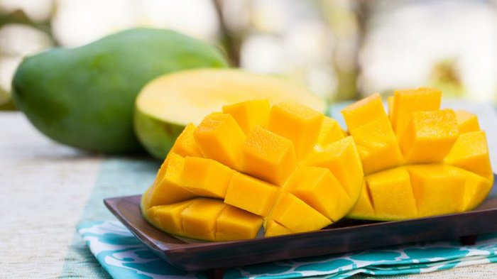
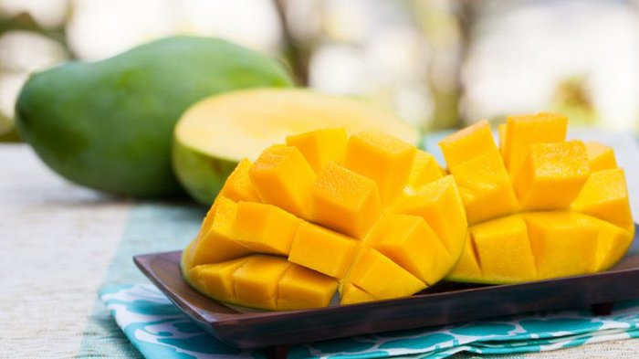

About Harumanis Mangoes
Harumanis mangoes are a premium variety grown exclusively in Perlis, Malaysia. Harumanis mangoes, also known as "fragrant mangoes," are a highly prized variety cultivated extensively in Malaysia. They are celebrated for their exceptional sweetness, distinctive aroma, and health benefits. These mangoes are a favorite among locals and tourists alike.
Pictures of Harumanis Mangoes
 

Benefits
Nutritional Benefits
-
Vitamins
Harumanis mangoes are rich in vitamins A, C, and several B vitamins, which are essential for immune function and overall health.
-
Dietary Fiber
These mangoes contain dietary fiber that aids in digestion and helps maintain healthy cholesterol levels.
-
Iron Content
Harumanis mangoes provide a good source of iron, which is important for preventing anemia and supporting overall energy levels.
Health Benefits
-
Boosts Immunity
The high vitamin C content supports the immune system.
-
Digestive Health
Their fiber helps maintain digestive regularity.
-
Weight Management
The natural sugars and fiber can promote a feeling of fullness, making them a good option for those on a diet.